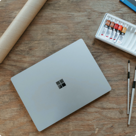

How long are you awake in the morning before you go online? Perhaps
it’s while you’re still lying in bed, using a news feed or social
media as the needed stimulant to push you out from under the covers.
Or maybe you wait to open your device until after a warm shower and
cup of coffee. If you use sleep tracking apps, you might say you
never signed off in the first place.
And, like millions of others during the pandemic, the internet is
probably what enabled you to stay in touch with family, or complete
entire years of work and/or school remotely. If this sounds
familiar, then you live in a part of the world where an internet
connection now counts as an essential utility — one that’s as easy
to take for granted as the natural gas heating your shower water or
the electricity powering your coffee maker.
But if you think we’re hyperconnected today, just wait. Globally,
just over 55% of today’s households have an internet connection.
This gap between the internet haves and have-nots is referred to as
the digital divide, and access is skewed toward richer nations. The
gap is projected to close in the next decade as billions of homes
connect to the internet for the first time and by 2030 it’s
estimated that the technology industry could account for 20% of the
global electricity demand. This presents a troublesome dichotomy. On
one hand, it supports livelihoods, educations, and bolsters the
global economy; on the other hand, the increased usage of the apps,
websites, and services that we build will place an even greater
strain on our already-overloaded power grids.
Medium Alike

Authors Name
7 july · 12 min read · Member-only


7 Practical CSS Tips
How product designers can break from the status quo and help our planet

Subheader
 180
180
 12
12